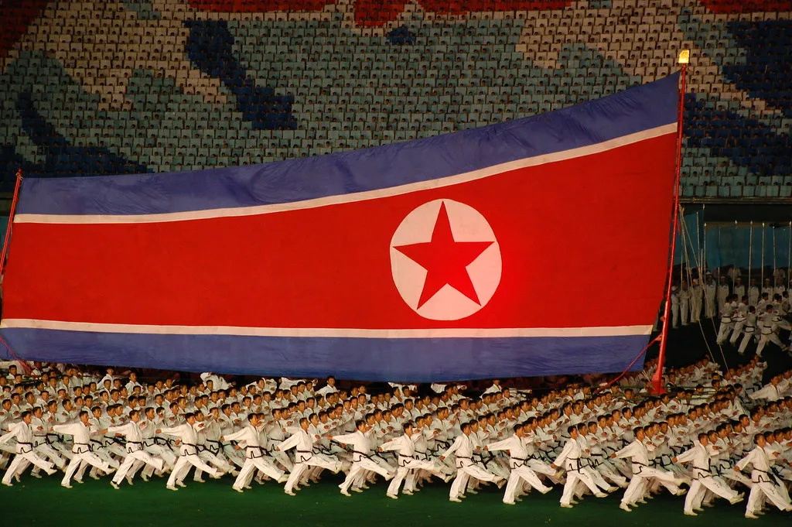

트럼프 "북한 핵무기 57개 보유"…대북정책 '핵 동결'로 선회하나
도널드 트럼프 미국 대통령이 지난 19일(현지시간) 북한이 핵무기 57개를 보유하고 있다고 언급하며, 구체적인 수치를 공개적으로 제시한 것은 이번이 처음이다. 트럼프 대통령은 김정은 북한 국무위원장과 조만간 다시 만날 수 있다는 취지의 발언을 하던 중 이 같은 수치를 밝혀 파장이 일고 있다. 그동안 미국 정부는 북한의 핵탄두 보유량을 놓고 구체적인 숫자를 공식적으로 언급하는 것을 자제해 왔다는 점에서, 이번 발언은 이례적이라는 평가가 나온다.
트럼프 대통령이 제시한 57개라는 수치는 국제 연구기관의 추정치와 상당히 근접한 수준이다. 스톡홀름국제평화연구소(SIPRI)는 올해 북한이 약 60개의 핵탄두를 조립한 것으로 추정하고, 여기에 더해 최소 30개를 추가로 생산할 수 있는 핵물질을 확보하고 있다고 분석한 바 있다. 트럼프 대통령의 발언이 이런 민간 연구기관의 추정치와 유사한 선에서 나왔다는 점에서, 미 행정부 내부적으로도 북한의 핵 능력을 어느 정도 구체적으로 파악하고 있다는 해석이 뒤따른다.

이번 발언에서 특히 주목받는 대목은 대북정책의 목표가 달라질 수 있다는 시사점이다. 트럼프 대통령은 북한과의 대화 재개 목표가 여전히 완전한 비핵화인지를 묻는 질문에 "그 이야기는 하고 싶지 않다"며 즉답을 피했다. 이를 두고 워싱턴 조야에서는 미국의 대북 접근이 기존의 '완전하고 검증 가능하며 불가역적인 비핵화(CVID)' 원칙에서, 북한의 핵 보유를 현실로 인정한 채 추가 확산을 막는 '핵 동결' 내지 군비통제 쪽으로 옮겨갈 수 있다는 관측이 제기된다.
트럼프 대통령은 이날 발언에서 김정은 위원장과 좋은 관계를 유지하는 것이 미국의 안보에 도움이 된다는 취지의 언급도 함께 내놨다. 그는 김 위원장과 올해 안에 다시 만날 가능성을 배제하지 않는다고 밝혀, 임기 중 북미 정상회담이 재개될 수 있다는 전망에 힘을 실었다. 다만 구체적인 시기나 장소, 의제 등에 대해서는 언급하지 않아 실제 회담 성사 여부는 여전히 유동적이라는 평가다.

국내에서도 이번 발언의 파장을 예의주시하는 분위기다. 외교가에서는 미국의 대북 목표가 비핵화에서 핵 동결이나 군축으로 실질적으로 옮겨갈 경우, 한반도 안보 지형 자체가 근본적으로 달라질 수 있다는 우려와 함께, 오히려 실질적인 긴장 완화의 계기가 될 수 있다는 기대가 동시에 나온다. 정부는 아직 공식 입장을 내놓지 않은 채 미국 측 발언의 진의를 파악하는 데 주력하고 있는 것으로 전해졌다.
그동안 한미 양국은 공식 협의 채널에서 북한의 비핵화를 최종 목표로 유지한다는 원칙을 되풀이해 왔다. 그런 만큼 이번처럼 미국 대통령이 직접 구체적인 핵탄두 숫자를 거론하며 비핵화라는 단어 자체를 피해간 것은, 그 자체로 협상 전략의 변화 가능성을 시사하는 신호로 받아들여질 수 있다는 분석도 나온다. 다만 백악관은 아직 이와 관련한 공식 브리핑이나 후속 설명을 내놓지 않은 상태다.
전문가들은 트럼프 대통령의 이번 발언이 아직 공식적인 정책 전환을 의미하는 것은 아니라는 점에 무게를 두면서도, 향후 북미 간 물밑 접촉이나 실무 협상 과정에서 이 같은 기류가 실제 협상 테이블에 어떤 영향을 미칠지 주목해야 한다고 지적한다. 북한의 핵 보유가 사실상 기정사실화되는 흐름 속에서, 한미 양국이 어떤 형태로 공조하며 대응 전략을 마련해 나갈지가 향후 한반도 정세의 중요한 변수가 될 전망이다.